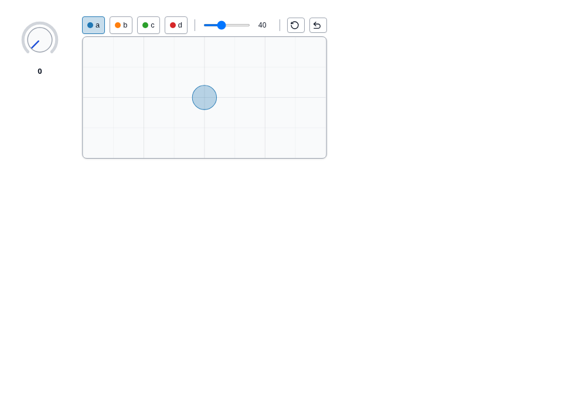

Published anywidgets (PyPI)
Anywidgets published on PyPI load without Python. A wheel is a zip archive: Anywidget.jl downloads it, checks its SHA-256, extracts it, and reads the widget class from its Python source as text. Python is never run.
using Anywidget
knob = pypi_anywidget("wigglystuff"; class = "Knob", value = 30.0)
scatter = pypi_anywidget("drawdata"; class = "ScatterWidget")
html_page("pypi.html", knob, scatter)
What is read
For the chosen class (deriving from anywidget.AnyWidget, directly or through other classes of the package):
| In the class | Read as |
|---|---|
_esm = """export default …""" (plain, raw, triple-quoted) | inline module |
_esm = pathlib.Path(__file__).parent / "static" / "widget.js" | file of the wheel |
_esm = DIR / "widget.js" with DIR = Path(__file__).parent / "static" | file of the wheel |
_css = … | same forms |
count = traitlets.Int(3).tag(sync=True) | default trait count = 3 |
| attributes not redefined by a subclass | inherited from its base class |
Trait defaults are read when their first argument is a literal (numbers, strings, True/False/None, lists, tuples, dicts) or absent (Int() is 0). Other traits are left to you: pass them as keywords to pypi_anywidget.
When static reading is not enough
Some packages build their front end at runtime (for example _esm = get_esm() concatenating several files). Anywidget.jl then says so and asks for the module file of the wheel:
pypi_module("somepackage"; esm = "somepackage/static/bundle.js")Choosing a class and a version
pypi_module("drawdata") # error: BarWidget, ScatterWidget
pypi_module("drawdata"; class = "ScatterWidget")
pypi_module("drawdata"; class = "ScatterWidget", version = "0.5.2")Without class, the only class of the project that has a front end is used.
Cache and index
Extracted wheels are kept in <depot>/anywidget/pypi (ANYWIDGET_CACHE or the cache keyword) and reused. The index is https://pypi.org/pypi (ANYWIDGET_PYPI_INDEX or the index keyword, for a mirror).
Tested against drawdata, ipymolstar, lonboard, mosaic-widget, quak and wigglystuff.